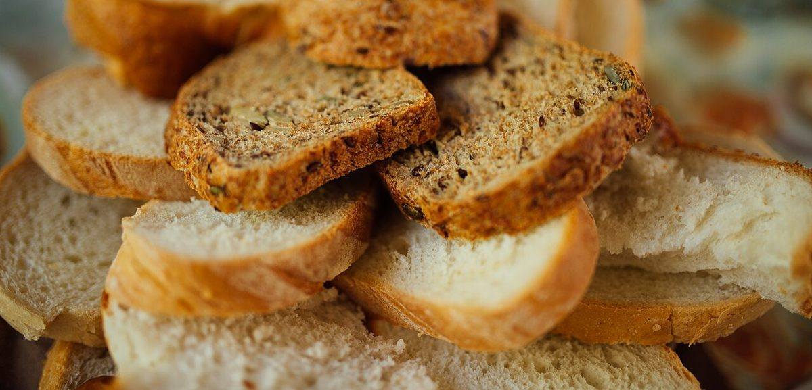

o
メニュー
メニュー
メニューと価格は準備中です。確認でき次第、こちらに掲載します。
| メニュー | 準備中 |
|---|---|
| 価格 | 準備中 |
| ご予約 | 準備中 |
下の写真は、ものの寄り写真を切手に見立てて並べるためのフリー素材で、お店で提供しているものではありません。提供メニューを示すものでもありません。
 準備中o
準備中o 準備中o
準備中o
準備中oメニュー
メニューと価格は準備中です。確認でき次第、こちらに掲載します。
| メニュー | 準備中 |
|---|---|
| 価格 | 準備中 |
| ご予約 | 準備中 |
下の写真は、ものの寄り写真を切手に見立てて並べるためのフリー素材で、お店で提供しているものではありません。提供メニューを示すものでもありません。
準備中o準備中o
準備中o